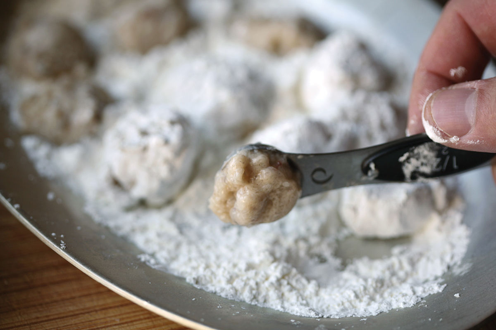
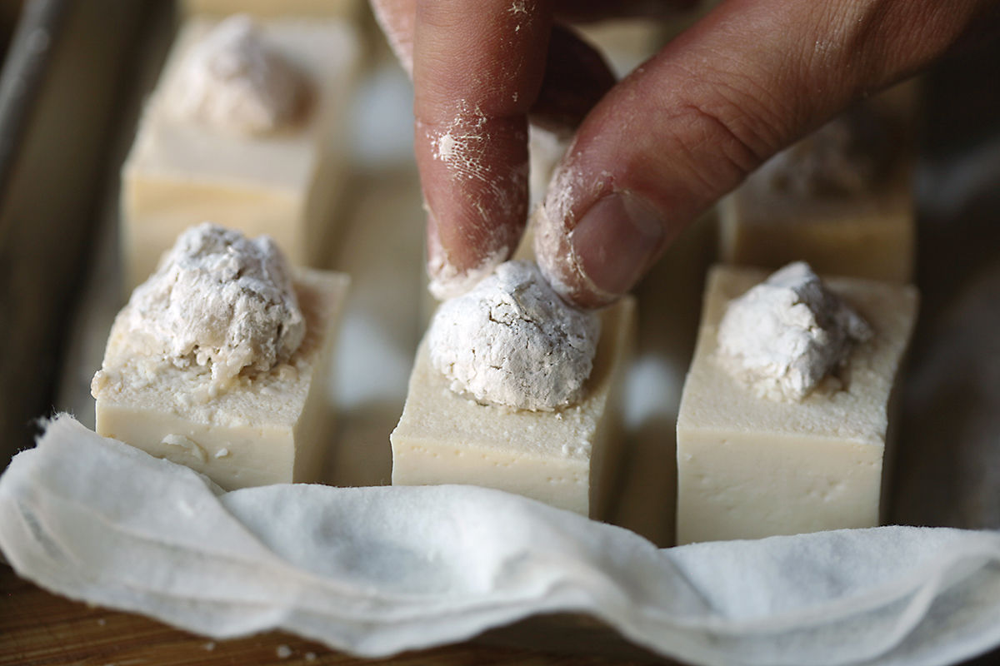
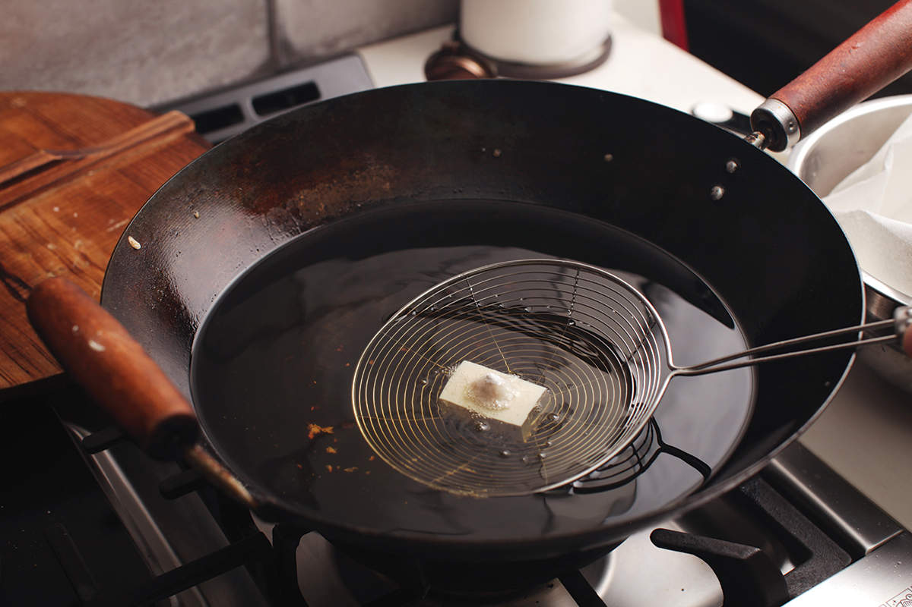
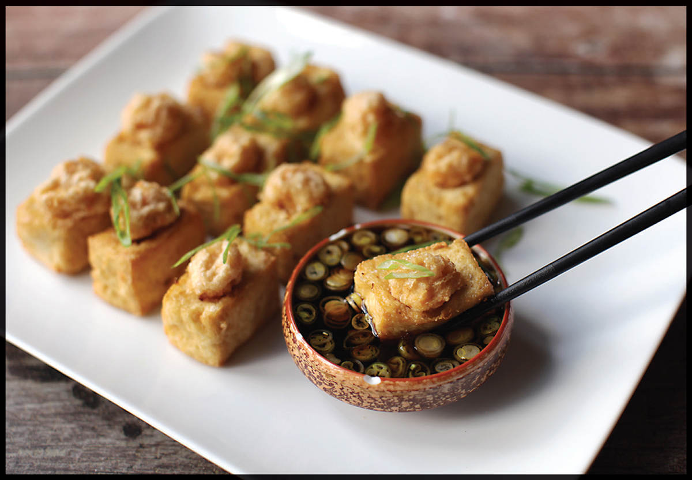

SHRIMP-STUFFED FRIED TOFU
|
Yield Serves 4 to 6 |
Active Time 30 minutes Total Time 30 minutes |
The first few times you try this dish you may find that the shrimp balls pop out of the tofu as they fry. This is no big deal. If that happens, just replace them while plating. I promise it will still be delicious.
Whenever my family went out for Cantonese food, my mother would invariably order the stuffed tofu. It’s not a common menu item these days, as many of the old New York–style Chinese American spots are being replaced (for better or worse) by a wider range of regional Chinese restaurants, but some of the old-school New York restaurants still have it. For now.
Thankfully, it’s a very simple dish to make at home. You start by making a little divot in the top of a cube of soft tofu. Into that divot goes a chopped shrimp mixture coated in cornstarch. You then deep-fry the whole thing and serve it shrimp side up with a soy-based dipping sauce.




DIRECTIONS
1 For the Shrimp Filling: Finely chop the shrimp with a cleaver or chef’s knife. Combine the chopped shrimp, sesame oil, wine, soy sauce, cornstarch, white pepper, and salt in a small bowl. Stir with a fork until the mixture is sticky and holds its shape easily. Alternatively, place all the ingredients in a mini-chopper and process until a sticky paste is formed.
2 For the Sauce: Combine the soy sauce, water, sugar, and scallion whites in a small bowl and stir until the sugar is dissolved. (Reserve the scallion greens for garnish in step 8.) Set aside.
3 For the Tofu: Cut the block in half horizontally, leaving the top and bottom halves stacked. Cut lengthwise down the center, then crosswise twice, giving you a total of 12 rectangular blocks of tofu. Arrange them on a large plate. Using a ¼-teaspoon measure, scoop out a small divot in the center of the top of each tofu block.
INGREDIENTS
For the Shrimp Filling:
4 ounces (120 g) shrimp, peeled
½ teaspoon (2.5 ml) roasted sesame oil
¼ teaspoon (1.25 ml) Shaoxing wine
¼ teaspoon (1.25 ml) light soy sauce or shoyu
½ teaspoon (1.5 g) cornstarch, plus more for dusting
Tiny pinch of freshly ground white pepper
Big pinch of kosher salt
For the Sauce:
2 tablespoons (30 ml) light soy sauce
1 tablespoon (15 ml) water
1½ teaspoons (6 g) sugar
1 scallion, thinly sliced, greens and whites reserved separately
For the Tofu:
One 12-ounce (340 g) block soft tofu
To Finish:
2 quarts (2 l) peanut, rice bran, or other neutral oil
4 Fill a shallow dish with a layer of cornstarch. Using a ¼-teaspoon measure, pick up small heaps of the shrimp mixture, drop them into the cornstarch, and roll to coat. You don’t need to be too precise, but your goal is to divide the mixture into 12 roughly equal-sized balls.
5 Use chopsticks or your fingers to pick up a shrimp ball and place it in the divot on a block of tofu, pressing gently to stick it into place. Repeat with the remaining shrimp balls and tofu blocks.
6 Pick up one block of tofu at a time, invert it so that the shrimp side is facing down, and gently press it into the plate of cornstarch, lightly flattening the shrimp ball and adding a thin layer of cornstarch to the top of the tofu block. Return the tofu block to the large plate, shrimp side up, dusting off any excess cornstarch.
7 To Finish: Heat the oil in a wok over high heat until it registers 375°F (190°C) on an instant-read thermometer. Carefully add the tofu to the oil one piece at a time. Adjust the heat to maintain a temperature between 350° and 375°F (175° and 190°C) and fry, moving the tofu around gently to avoid knocking the shrimp filling out, until golden brown and very crisp, about 4 minutes. Transfer to a paper-towel-lined plate to drain.
8 Arrange on a serving platter shrimp side up, sprinkle with the reserved scallion greens, and serve immediately with the dipping sauce.

Should I Marinate Tofu?
It seems like a no-brainer to marinate tofu, but I’d actually advise against it. While nonsilken tofu does have a somewhat spongy texture that will absorb marinades, you end up with tofu that browns too fast and tastes like raw marinade on the inside. I prefer keeping the tofu tasting like tofu, using a sauce applied after cooking to lend it flavor if it needs it.
Similarly, a dusting of spices can be tasty if the spices are fresh, properly toasted, and balanced, but again, you want to apply them after cooking the tofu. Tofu simply takes too long to crisp up properly to be able to season it before cooking without running the risk of burning those spices up.